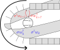
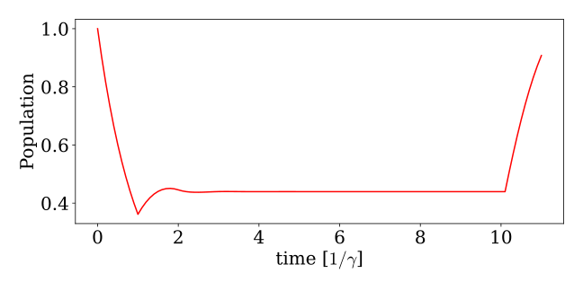
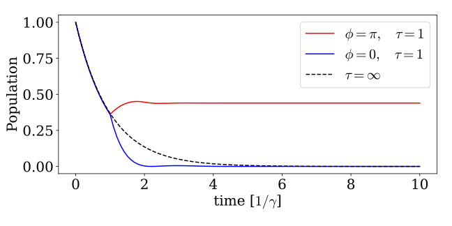

Non-Markovian dynamics
Non-Markovian dynamics or memory effects can arise in waveguide QED systems when the emitted light is reflected back into the system or when considering two spatially separated emitters. Waveguide systems with memory effects constitute a challenging class of problems because knowledge of the emitted field is inherently required to capture the correct feedback. In the WaveguideQED framework, we describe the entirety of the emitted field, which enables a straightforward treatment of memory effects, which we showcase below.
Waveguide and Mirror
As an example of a system with memory effects, we consider a Semi-Infinite Waveguide terminating with a mirror in one end, as also depicted below. The mirror will here introduce a face shift $\phi$, but also an excitation emitted in the left mode will, after a delay time of $\tau/2$, be reflected into the right mode and thus, after a total delay time of $\tau$ hit the emitter again.

The left and right propagating modes are here symmetrical Sofia Arranz Regidor, Gavin Crowder, Howard Carmichael, Stephen Hughes (2021), and one can instead think of a single mode wrapping around the emitter. The waveguide is thus a "horseshoe", and the emitter couples to two points of the horseshoe. The two points are here seperated in time ensuring the feedback mechanism. This is also illustrated below.

With this mental picture, there is only one propagating mode, and we describe the interaction through the Hamiltonian S. J. Whalen (2019):
\[\begin{equation} H_k = \mathrm{e}^{i \phi} \sqrt{\gamma/2\Delta t} \left( \sigma^\dagger w_{k} + \sigma w_{k}^\dagger \right) + \sqrt{\gamma/2\Delta t} \left( \sigma^\dagger w_{k+\Tilde{\tau}} + \sigma w_{k+\Tilde{\tau}}^\dagger \right) \end{equation}\]
where $\Tilde{\tau} = \tau/\Delta t$ is the index necessary to introduce a time-delay of $\tau$ between the emission and reabsorption. Note that it is the operator $w_{k+\Tilde{\tau}}$ that never "sees" the emitted photon again (thus corresponding to the left propagating mode in the first figure, whereas the operator $w_{k}$ experiences the emitted photon from $\Tilde{\tau}$ time steps ago (and thus corresponds to the right propagating mode). $w_{k}^\dagger$ and $w_{k}$ thus carry the phase factor $\mathrm{e}^{i \phi}$ from the mirror.
This type of Hamiltonian is easily described in the WaveguideQED framework. We can here create "delayed" operators that address time bins at a delayed time, thus corresponding to $w_{k+\Tilde{\tau}}$. This can be done with the keyword delay when creating the operator that determines how many bins the delay should be. The value delay should therefore be an integer corresponding to $\Tilde{\tau} = \tau/\Delta t$. In the following, we define $w_{k+\Tilde{\tau}}$ as w_delayed:
times = 0:0.1:11
dt = times[2]-times[1]
bw = WaveguideBasis(1,1,times)
delay_time = 1
w_delayed = destroy(bw;delay=delay_time/dt)
wd_delayed = create(bw;delay=delay_time/dt)The delayed operators are just normal WaveguideOperators addressing different time-bins and can, therefore, effortlessly be combined with the operators of the emitter:
be = FockBasis(1)
bw = WaveguideBasis(1,1,times)
sdw_delayed = create(be) ⊗ w_delayed
wds_delayed = destroy(be) ⊗ wd_delayedWe can then create the non-delayed operators. We also define the Hamiltonian with a leakage rate of $\gamma = 1$ and a mirror phase of $\pi$:
gamma = 1
phi = pi
sdw = create(be) ⊗ destroy(bw)
wds = destroy(be) ⊗ create(bw)
H_pi = exp(im*phi)*sqrt(gamma/2/dt)*(sdw+wds)+sqrt(gamma/2/dt)*(sdw_delayed+wds_delayed)Considering then how an initially excited emitter population decays, we create the expectation function ne_exp returning the emitter population and define the initial state.
sd = create(be) ⊗ identityoperator(bw)
s = destroy(be) ⊗ identityoperator(bw)
n = sd*s
function ne_exp(time,psi)
expect(n,psi)
end
psi_initial = fockstate(be,1) ⊗ zerophoton(bw)Finally, we can solve the dynamics of the system and plot them.
_,ne_pi = waveguide_evolution(times, psi_initial, H_pi,fout=ne_exp)fig,ax = subplots(1,1,figsize=(9,4.5))
ax.plot(times,ne_pi,"r-")
ax.set_xlabel(L"time [$1/\gamma$]")
ax.set_ylabel("Population")/usr/lib/python3/dist-packages/matplotlib/cbook/__init__.py:1298: ComplexWarning: Casting complex values to real discards the imaginary part
return np.asarray(x, float)
Here, we observe excitation trapping, where destructive interference from the mirror phase, prevents any excitation from going to the right after the initial feedback loop (notice the kink around $t=1$). This is a typical effect observed in these feedback systems, see Sofia Arranz Regidor, Gavin Crowder, Howard Carmichael, Stephen Hughes (2021). Note that we observe an artifact in the simulation from $t=10$ to $t=11$ because the delayed operators are trying to address bins in the future which do not exist. To prevent such spurious results from appearing we can instead simulate for a shorter time such that the delay of the operators never exceed the time-bins over which the waveguide basis is defined. We illustrate this in the following by considering a mirror phase of $\phi =0$ and only simulate until $t=10$:
phi = 0
H_zero = exp(im*phi)*sqrt(gamma/2/dt)*(sdw+wds)+sqrt(gamma/2/dt)*(sdw_delayed+wds_delayed)
times_sim = 0:0.1:10
_,ne_0 = waveguide_evolution(times_sim, psi_initial, H_zero,fout=ne_exp)This gives the plot:
fig,ax = subplots(1,1,figsize=(9,4.5))
ax.plot(times_sim,ne_pi[1:end-10],"r-",label=L"$\phi = \pi, \ \ \ \tau= 1$")
ax.plot(times_sim,ne_0,"b-",label=L"$\phi = 0, \ \ \ \tau= 1$")
ax.plot(times_sim,exp.(-times_sim),"k--",label=L"$\tau= \infty$")
ax.set_xlabel(L"time [$1/\gamma$]")
ax.set_ylabel("Population")
ax.legend()/usr/lib/python3/dist-packages/matplotlib/cbook/__init__.py:1298: ComplexWarning: Casting complex values to real discards the imaginary part
return np.asarray(x, float)
/usr/lib/python3/dist-packages/matplotlib/cbook/__init__.py:1298: ComplexWarning: Casting complex values to real discards the imaginary part
return np.asarray(x, float)
For comparison, we here also plotted an exponential decay with the rate $\gamma$ which corresponds to an infinite delay time. We see that for $\phi=0$ we have constructive interference for the excitation going to the right and the population of the emitter decays faster than had there been no feedback. The photon thus experiences stimulated emission with itself!